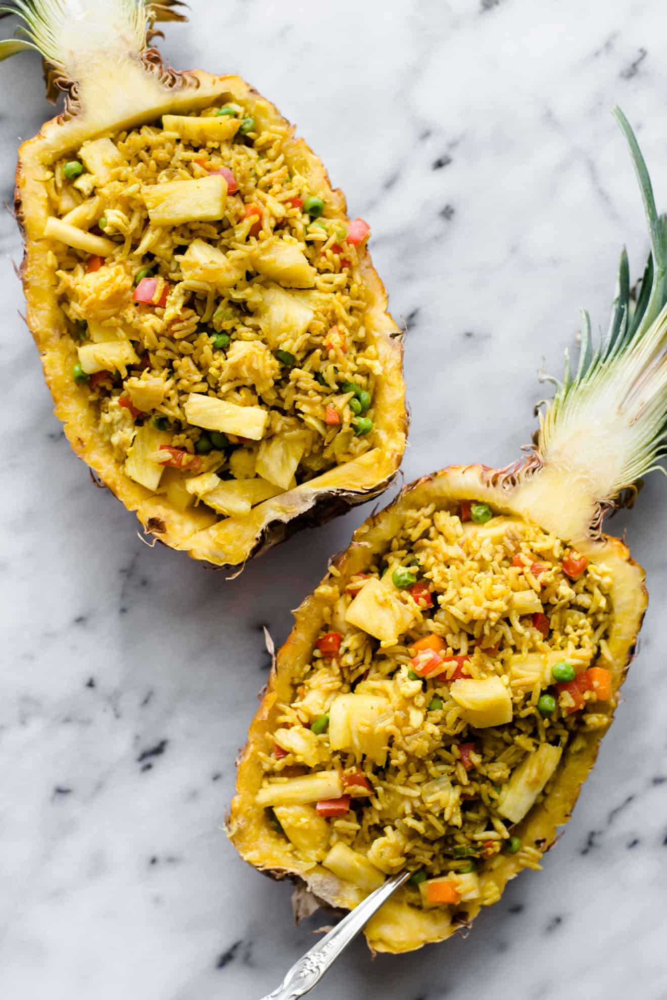

Pineapple Fried Rice

Description:
A healthy pineapple fried rice comprised of a lovely blend of sweet and savory flavors. This can be done in 30 minutes!
Ingredients:
- Safflower oil (3 tbsp)
- 3 Large eggs whisked
- Diced yellow onions (1cup)
- Pinch of salt
- Large red pepper diced (1/2)
- Large carrot peeled and diced (1/2)
- Frozen peas (1/2 cup)
- Turmeric (1 1/2 tsp)
- Cooked jasmine rice (6 cups)
- Soy sauce (3 tbsp)
- Brown sugar (1 1/2 tbsp)
- Ground white pepper (1/2 tsp)
- Diced pineapple (1 1/4 cups)
- 2 sliced scallions
- Chopped basil (3 tbsp)
Steps:
- Heat 1/2 tablespoon of oil in a wok or large sauté pan over medium-high heat. When the pan is hot, add the whisked eggs and scramble it with a spatula. Continue scrambling until eggs are cooked, about 30 seconds to 1 minute. Transfer eggs to a plate and set aside. If the wok or pan is dirty, wipe it down with paper towels.
- Heat remaining 2 1/2 tablespoons of oil over medium-high heat. Add the onions and a pinch of salt and cook until the onions start to soften, about 2 minutes. Mix in the red pepper, carrots and peas and cook for another 2 minutes. Add the turmeric and coriander and stir until the vegetables are coated with the spices. Add the rice and mix well with the vegetables. Continue cooking and stirring the rice for about 1 to 2 minutes.
- In a small bowl, quickly mix the soy sauce (or tamari) with the brown sugar and pour that sauce over the rice. Add the white pepper, if using, and stir until well incorporated
- Add the eggs, pineapple and sliced scallions to the rice and stir to distribute. Turn off the heat and mix in the chopped basil. Serve immediately.
And that's it! Bon Appetit!